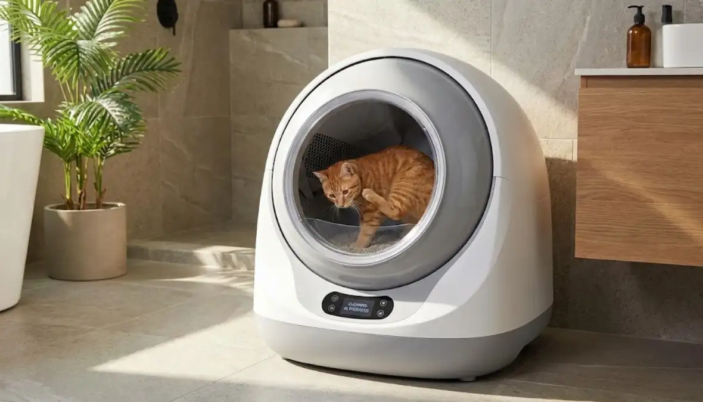

Cómo adaptar a tu gato a su nuevo arenero automático (Sin estrés ni dramas)

Como ya sabemos los gatos son animales de costumbres que odian los cambios bruscos. Y más todavía si se trata de su momento más intimo y vulnerable. Si tienes problemas o crees que los puedes tener sigue esta guía para que el cambio de arenero sea un éxito:
Paso 1: La ubicación es sagrada
Un error muy común, es poner el arenero nuevo en una ubicación distinta, ya sea por espacio o por estética. ¡No la hagas! Hay que ponerlo al lado del viejo, al menos durante una o dos semanas. Cuando esté acostumbrado al arenero automático ya lo cambiarás de sitio poco a poco.
Paso 2: Modo "Manual" obligatorio
Una vez en su sitio, no lo enchufes todavía. Llénalo de arena y deja que el gato entre, salga, lo huela y lo investigue. Piensa que el ruido del motor y el movimiento del tambor pueden asustarlo, y ya no querrá entrar. En esta fase tendrás que recoger la orina y las heces a mano.
Paso 3: El truco de la "Arena Vieja"
Utiliza su olfato para atraerlo. Tienes que echar algo de arena usada que contenga orina y heces de tu gato para que él entienda que eso también es su baño. Es muy importante viertas la misma marca de arena que estabas usando, siempre que sea compatible con el arenero automático, para no generar más cambios en su rutina.
Paso 4: Deja que el arenero viejo "pierda su encanto"
Como ya sabes tu gato es muy limpio y no le gusta hacer sus necesidades en un arenero sucio. Así que en esta fase que sigues limpiando a mano el arenero nuevo, deja de limpiar el viejo. Esto hará que él haga el cambio de manera natural, buscando limpieza.
Paso 5: El primer encendido (El momento crítico)
Ahora el gato ya usa su arenero nuevo de forma habitual es momento de ponerlo en marcha. Actívalo de manera manual cuando esté en la misma habitación, sin que esté demasiado cerca, para que vea como se mueve y se acostumbre al ruido. Si se asusta o se pone nervioso, dale un premio como refuerzo positivo.
¿Qué pasa si se resiste?
Tienes que tener paciencia. Algunos gatos pueden tardar 3 días mientras que otros llegan a las 3 semanas. Si después de 10 días tu gato sigue sin usar el arenero nuevo, prueva con esto:
¡Suerte y mucha paciencia! Una vez que lo consigas, te asegurarás años de comodidad sin volver a tocar una pala.